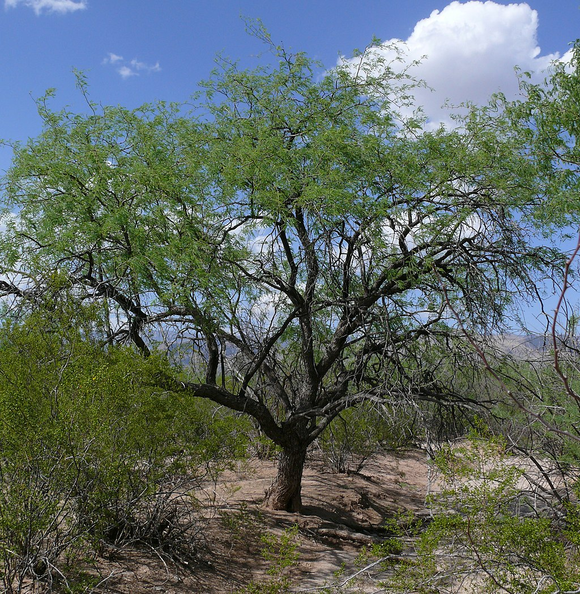

Mixquiahuala de Juárez es un lugar con historia profunda y riqueza natural.
Su nombre proviene del náhuatl y significa Lugar
rodeado / abundante de
magueyes.
Esta región destaca por su biodiversidad, con una gran piscina de elecciones para flora
y fauna.
Ya muchas personas de otros lados, CDMX, EDOMEX, y otros lugares de la república mexicana describen
este lado del charco como un ecosistema clave para la conservación
local.
"Camarón que se duerme, le quitan sus placas los polis en el centro. - Conocimiento general"
Es bien sabido por los pobladores que Mixquiahuala tiene un clima algo impredecible, mayoritariamente
porque Hidalgo se ubica en zona montañosa, agregado a su ubicación geográfica, es motivo para su:
Clima semiseco con temporada de lluvias marcada.
Predominio de flora y fauna ya adaptada al clima.
Prácticas culturales y medicinales heredadas de generaciones en generaciones.
La flora y la fauna tambien llega a varios ámbitos aquí en el valle del mezquital, por ejemplo:
Festividades: algunas celebraciones tradicionales y ferias locales se basan en el
clima o la temporada, como la recolección de la flor.
Artesanías: tejidos, bordados y productos locales vienen algunos de la flora de
Mixquiahuala e Hidalgo en general.
Gastronomía: abarca alimentos típicos de la región, bien deliciosos los platillos que
se preparan a partir de tanta diversidad que tenemos en plantas y en animales.
Fecha de la redacción:
Observaciones realizadas por: Ian Calva
Nota: por obvias razones, esta información no debe tomarse como una verdad absoluta; si
no como una opinión subjetiva realizada por el programador responsable de la programación de la
página.
Flora
Maguey
El maguey es una planta típica de la región usada para pulque, fibras y medicina tradicional.

Mezquite
Árbol encontrado principalmente en las zonas áridas y semiáridas de México, abarcando el
centro-sur del país. Por él recibe el nombre de "Valle del Mezquital"
Tuna
Sale del nopal; fruto que es abundante en fibras y es cultivado debido a que es, en pocas
palabras, riquísimo.
Principales especies de la región Mixquiahuala / Hidalgo
Planta
Nombre Científico
Hábitat
Usos
Maguey
Agave americana
Zonas áridas y semiáridas
Pulque, fibras, medicina
Encino
Quercus spp.
Bosques templados
Madera, sombra, conservación de suelo
Cactus
Opuntia spp.
Zonas secas y desérticas
Alimentación, decoración, medicina tradicional
Información adicional sobre el Maguey
El maguey se cultiva desde tiempos prehispánicos y es esencial en la cultura local para elaborar
bebidas y textiles.
Información adicional sobre el Cactus
Algunos cactus son comestibles y se utilizan en platillos tradicionales como nopales y dulces
regionales.
Fauna
Tlacuache
Único marsupial que habita en México y en centroamérica, conocido tambien como Zarigueya,
aparecen de vez en cuando.
Petirrojo
Si hay una rama cerca, hay una posibilidad de que esté, a todo lugar que uno vaya seguramente se
aparece.
Tigre
Ya ni qué decirles, si el animal es el tigre o el taquero, Mixquiahuala pasará a la historia por
ser el primer municipio que tuvo un tigre en una taquería y lo sacaron como gato.
Tigre Bengala (el que se metió a la taquería, no es de aquí, pero si tuviera un peso por
cada vez que sacaran un tigre de una taquería tuviera un peso, lo cual no es mucho pero es
rarisimo que haya pasado)Video del Tigre XDRecreación del rugido del Tigre de los tacos.Más información sobre el tigre bengala
Especies representativas y su hábitat
Animal
Nombre Científico
Hábitat
Alimentación
Coyote
Canis latrans
Zonas rurales y semiurbanas
Carnívoro oportunista
Tejón
Meles meles
Bosques montañosos
Omnívoro
Loro cabeza amarilla
Amazona ochrocephala
Bosques tropicales y huasteca
Frutas, semillas
Medicina Tradicional
Notese que antes de leer el siguiente artículo, NO debe tomarse como un recetario 100% fiel y que deba
usarse en el día a día, es solamente una recopilación de usos prácticos de la medicina tradicional, NO
es una guía para automedicarse.
La medicina tradicional en Mixquiahuala se basa en el uso de plantas locales para tratar
enfermedades comunes, todo aquel Mixquiahualense ha sido tratado por lo menos una vez en su vida
por su abuelita con remedio casero..
Algunas plantas como el maguey y la sábila tienen propiedades destacadas.
Se ha documentado que la infusión de hierbas puede aliviar malestares digestivos.
Existen recetas que utilizan pequeñas cantidades de plantas combinadas con otros
ingredientes.
También se practican técnicas tradicionales que han sido desaprobadas por la medicina
moderna,
aunque algunas están siendo estudiadas nuevamente.
Algunos términos locales incluyen: jugo de maguey, gel de sábila.
En la preparación, a veces se agregan dosis mínimas o especiales según la edad
del paciente.
La dirección de los masajes y remedios puede invertirse usando técnicas
tradicionales, y se aplican pausas en puntos estratégicos.
Planta
Uso Medicinal
Preparación
Maguey
Tratamiento de heridas y digestión
Jugo o cataplasma
Sábila
Quemaduras y cuidado de la piel
Gel aplicado directamente
Hierbas locales
Problemas digestivos
Infusión de hojas secas
Tradiciones y curiosidades
En Mixquiahuala se celebran varias fiestas tradicionales que combinan
música, danza y gastronomía típica de la región.
Fiesta del pulque
Se celebra cada año en honor al maguey y sus derivados.
Danza de los viejitos
Una danza típica con máscaras que simbolizan la sabiduría y la tradición.
Algunas tradiciones antiguas han desaparecido con el tiempo.
Otras se conservan y se fortalecen en la comunidad.
Dato curioso: La bebida tradicional pulque se obtiene del maguey.
Se recomienda probarlo durante las festividades locales para experimentar la cultura.
Algunos nombres de plantas y aves se usan en leyendas: El maguey de la abuela
Estas costumbres se transmiten de generación en generación.
Antiguamente se usaban símbolos como ☀ para representar el sol y la cosecha.
Algunas inscripciones antiguas se leen de derecha a izquierda.
Se colocan marcas especiales como destacado en rituales importantes.
x representa la cantidad de flores usadas en ofrendas.
Danza de los viejitos, originaria de Michoacan y celebrada aquí